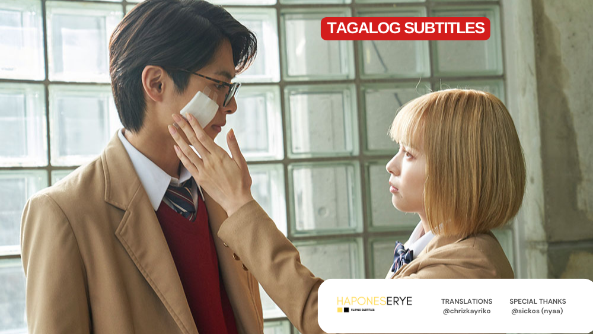
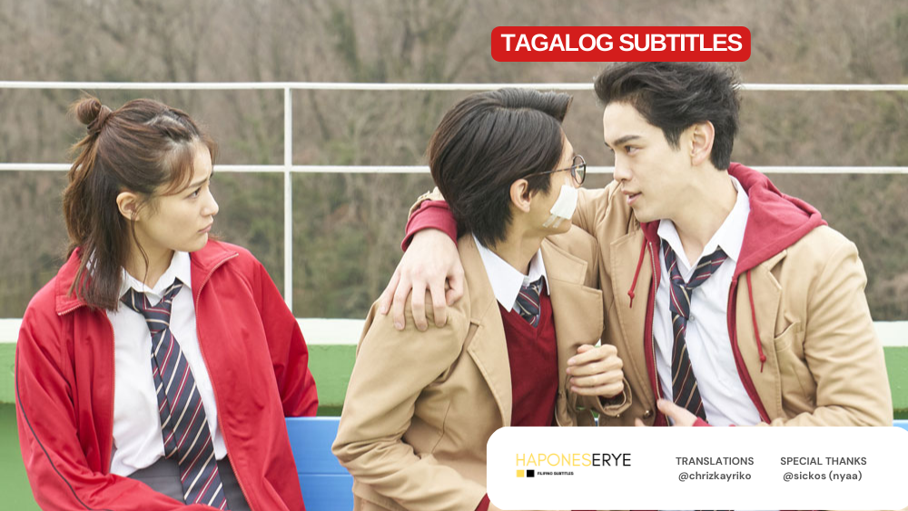
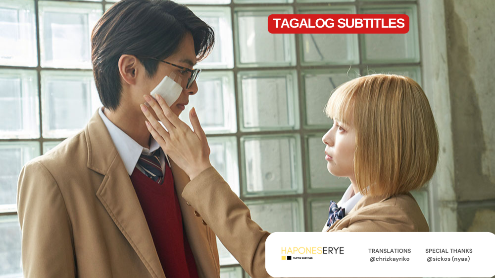
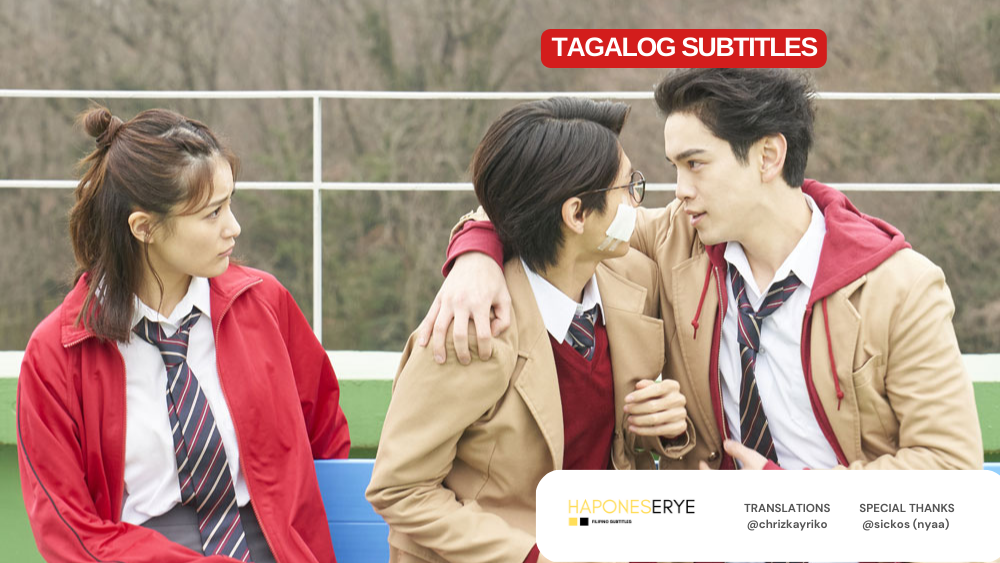

SYNOPSIS
Taong
kung saan ang
Si Inuda Hikaru ay isang honor student na ang ama ay executive sa Setori (Sexual Misconduct Control Bureau ng Ministry of Health, Labor and Welfare). Hikaru aspires na maging tulad ng kanyang ama at natagpuang hindi kasiya-siya ang sex. Si Minase Yu ang childhood friend ni Hikaru na matalas ang dila pero magaling sa klase. Si Yu ay isa ring malaking tagahanga ng pambansang kilalang aktres na si Uchu Misora, na mas kilala bilang Uchura.
#9
Matagal na palang binabantayan ni Aohara sina Uchura at Inuta. Dinukot nila ang dalawa para pilitin na mag-sex sa isa't-isa. Isang sikat na artista at anak ng isang SETORI executive ang pinagtambal ni Aohara. Gusto ni Aohara na maisip ng mga tao na ang Sexual Intercourse Act ay hadlang sa gagawing sex ng dalawa.
#8
Sumama si Uchura sa ginawang pagtakas nina Minase at Inuta. Samantalang nasa bahay naman ng tatay ni Uchura silang tatlo, sinubukan nilang pasiglahin si Inuta.
#7
Malalaman na ang kinaroroonan ni Hikaru Inuta at nakita nila ito sa bar ni Aohara. Isasagawa ang operasyon ng pagliligtas sa kanya!
#6
 



Matapos mapagtanto ni Inuta na kasama ni Nishibukuro si Minase, pinuntahan niya ito sa mismong bahay niya, at iniligtas si Minase! Ang pagliligtas na ito ang siyang magpapasimula ng pagsakit ng puso ni Inuta, na nagpapahiwatig ng "pag-big", sabi nina Shiba at Nana.
#5
Sa wakas, ginalugad na ng SETORI ang G-Ants. Ngunit walang tao sa loob!?
Kay Inuta nanggaling ang impormasyon na nag-ugat sa paggalugad. Trinaydor ni Inuta ang kanyang ama, upang iligtas ang matalik niyang kaibigan na si Shiba.
Nakisama naman si Minase kay Nishibukuro para manood ng live performance nina Oketsu at Kinta. Inimbatahan siya ni Nishibukuro para manood pa sa kanyang bahay.
#4
Matapos maging susi ng pagkakatakas nina Yu Minase at Inuta Hikaru si Shiba, bigla naman itong nawala!
Siya ay hindi makita ng kanyang nobya kahit saan. Saan kaya naroroon si Shiba? Paano kaya ililigtas si Shiba?
#3

Sa G-ANTS, nakatakdang binyagan si Inuta ng kanyang unang sex. Ipinartner siya kay Ushimoto Kanna. Ngunit sa simula pa lang
ay hindi na nakapagpigil ng init ng katawan si Inuta. Ano kaya ang magiging kahihinatnan ng kawalan ng disiplina ni Inuta?
#2
Matapos akitin si Inuta ng
Ang guro pala ay dating mahilig sa sex at hanggang ngayon ay
Abangang ang kapana-panabik na tagpo sa susunod na episode na ito...
#1
Taong
bawal na ang